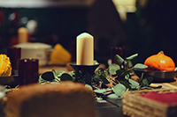

Artisan Provisions
Hand-selected, seasonal ingredients sourced from our estate farm and trusted local growers. Each item is chosen for its freshness, flavor, and integrity.
Harvested with Care, Served with Elegance
At Field & Feast, we believe that the finest meals begin at the source. Rooted in tradition yet refined for the modern palate, our farm-to-table philosophy celebrates the beauty of seasonality, sustainability, and craftsmanship. From the sun-drenched fields where our produce is grown to the artfully curated dishes we serve, every detail is designed to bring you an experience of unparalleled quality and flavor.
Hand-selected, seasonal ingredients sourced from our estate farm and trusted local growers. Each item is chosen for its freshness, flavor, and integrity.
Join us for intimate chef-led tastings and farm-to-table feasts, where carefully crafted menus highlight the best of the season.
Experience a curated selection of premium seasonal ingredients delivered to your doorstep each month.
Elevate your home dining with the finest farm-to-table offerings, elegantly packaged and delivered with care.
Experience the elegance and artistry behind Field & Feast through our curated collection of images. From lush fields and handcrafted ingredients to beautifully plated farm-to-table creations, each photo tells the story of our commitment to excellence.


